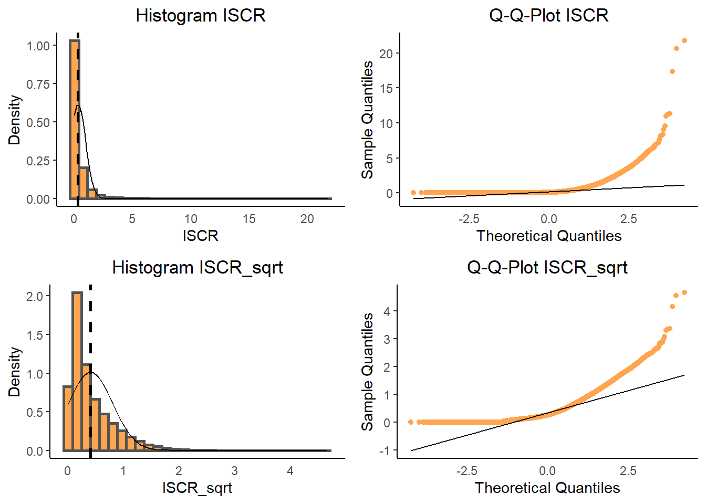
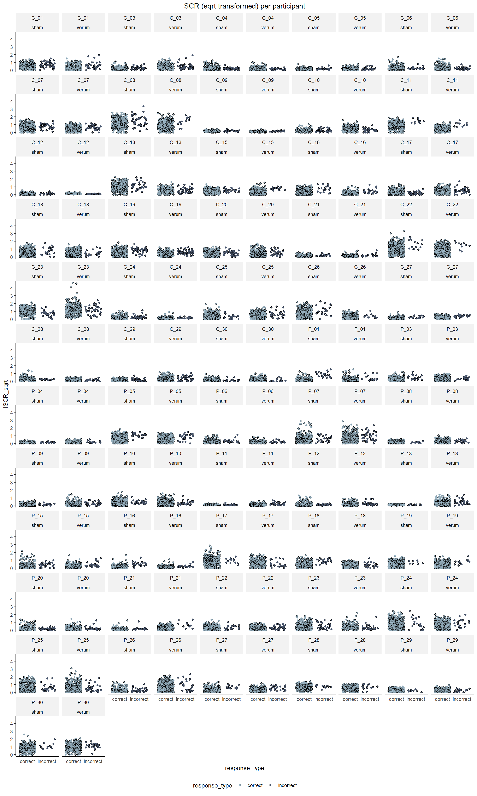
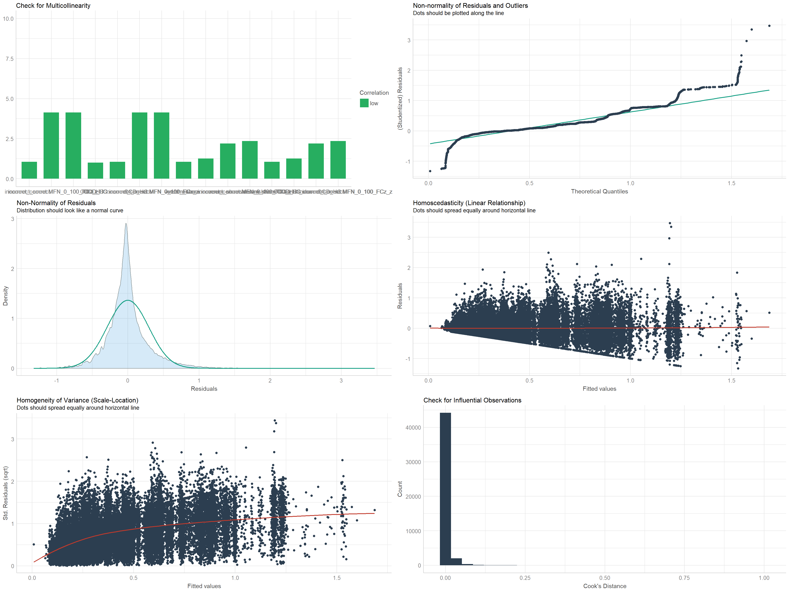

SCR Analysis
Data Cleaning
# Load data
load(file = "./data/Single_Trial_Data.rda")
# Exclude P_02 (due to retainer) and C_02 (as preregistered: patients are excluded with their match)
single_trial_data <- single_trial_data[single_trial_data$participant_id != "P_02" & single_trial_data$participant_id != "C_02",]
# Determine trials preceding or following an error (to minimize effects of overlapping events)
single_trial_data <- single_trial_data %>%
dplyr::mutate(
followed_or_preceded_by_error = ifelse(lag(response_type == "incorrect", default = FALSE) == TRUE, TRUE,
ifelse(lead(response_type == "incorrect", default = FALSE) == TRUE, TRUE, FALSE))
)
# For each first or last trial in a block, followed_or_preceded_by_error is FALSE
single_trial_data[single_trial_data$trial == 1 |
single_trial_data$trial == 80 | single_trial_data$trial == 81 |
single_trial_data$trial == 160 | single_trial_data$trial == 161|
single_trial_data$trial == 240 | single_trial_data$trial == 241|
single_trial_data$trial == 320 | single_trial_data$trial == 321|
single_trial_data$trial == 400 | single_trial_data$trial == 401|
single_trial_data$trial == 480, "followed_or_preceded_by_error"] <- FALSE
# Exclude missing responses, RT outliers and trials with ERP artifacts, trials with NA for SCR (= no additional trials), trials preceding or following an error
single_trial_data_clean <- single_trial_data %>%
dplyr::filter(
response_type != "miss" &
rt_invalid == FALSE &
!is.na(MFN_0_100_FCz) &
!is.na(ISCR) &
followed_or_preceded_by_error == FALSE
) # (46973 of 53760 trials left)
# Add column for (grand mean standardized) number of errors (needed as covariate later) - this variable contains total number of errors, not only those entering analysis (preferred according to JK)
single_trial_data_clean <- single_trial_data %>%
dplyr::group_by(participant_id, session) %>%
dplyr::summarize(number_errors = sum(response_type == "incorrect")) %>%
dplyr::ungroup(.) %>%
dplyr::left_join(single_trial_data_clean, ., by = c("participant_id", "session"))
# Standardize this variable
single_trial_data_clean$number_errors_standardized <- scale(single_trial_data_clean$number_errors, center = TRUE, scale = TRUE)
# Add column for medication (needed as covariate later)
single_trial_data_clean <- single_trial_data_clean %>%
dplyr::mutate(medication = as.factor(ifelse(participant_id == "P_02" | participant_id == "P_04" | participant_id == "P_05" |
participant_id == "P_06" | participant_id == "P_08" | participant_id == "P_10" |
participant_id == "P_15" | participant_id == "P_16" | participant_id == "P_18" |
participant_id == "P_22" | participant_id == "P_25" | participant_id == "P_26" |
participant_id == "P_28" | participant_id == "P_30", "yes", "no")))
# Calculate sqrt transformed SCR (closer to normality than log transformed), standardized SCR, and standardized MFN
single_trial_data_clean <- single_trial_data_clean %>%
dplyr::group_by(participant_id, session) %>%
dplyr::mutate(
ISCR_sqrt = sqrt(ISCR),
ISCR_z = scale(ISCR, center = TRUE, scale = TRUE),
MFN_0_100_FCz_z = scale(MFN_0_100_FCz, center = TRUE, scale = TRUE)
) %>%
dplyr::ungroup()
# Calculate aggregated data per participant for boxplots
df_aggregated_per_subject_SCR <- single_trial_data_clean %>%
dplyr::group_by(participant_id, group, response_type, stimulation, session) %>%
dplyr::summarize(
ISCR_z = mean(ISCR_z, na.rm = TRUE)
) %>%
dplyr::ungroup()
# Make categorical variables factors
single_trial_data_clean$participant_id <- as.factor(single_trial_data_clean$participant_id)
single_trial_data_clean$group <- as.factor(single_trial_data_clean$group)
single_trial_data_clean$session <- as.factor(single_trial_data_clean$session)
single_trial_data_clean$stimulation <- as.factor(single_trial_data_clean$stimulation)
single_trial_data_clean$response_type <- as.factor(single_trial_data_clean$response_type)Trials were excluded from all analyses if RT was shorter than 100 ms or longer than 800 ms or if the response in a trial was missing. We further discarded trials containing artifacts in the EEG, i.e., a voltage difference exceeding 50 μV between two consecutive sampling points or 200 μV within an epoch. In addition, we here excluded trials preceding or following an error (so that SCR was not confounded by previous or following events within the response window that may elicit pronounced changes of skin conductance).
In this analysis, ISCR values for the time window 1-5 s after the response were extracted for each trial. Common recommendations for response windows typically range from from 1 to 3 s up to 1 to 5 s after the stimulus (Dawson et al., 2007; Benedek & Kaernbach, 2010). I chose 1 t 5 s after the response because this is also compatible with the observed response window in the data (based on visual inspection in BVA of correct vs. error condition).
Data Inspection
Distribution
# Plot distribution ISCR
hist_ISCR <- ggplot(single_trial_data_clean, aes(x = ISCR)) +
geom_histogram(aes(y = ..density..), color="gray33", fill = "#8ea6b4", size = 1) +
stat_function(fun = dnorm, args=list(mean = mean(single_trial_data_clean$ISCR, na.rm = TRUE),
sd = sd(single_trial_data_clean$ISCR, na.rm = TRUE)), color = "black", size = 0.5) +
geom_vline(aes(xintercept = mean(ISCR, na.rm = TRUE)), color = "black", linetype = "dashed", size = 1) +
labs (title = "Histogram ISCR", x = "ISCR", y = "Density") +
my_figure_theme
qqplot_ISCR <- ggplot(single_trial_data_clean, aes(sample = ISCR)) +
stat_qq(color = "#8ea6b4") +
stat_qq_line() +
labs (title = "Q-Q-Plot ISCR", x = "Theoretical Quantiles", y = "Sample Quantiles") +
my_figure_theme
# Plot distribution ISCR sqrt
hist_ISCR_sqrt <- ggplot(single_trial_data_clean, aes(x = ISCR_sqrt)) +
geom_histogram(aes(y = ..density..), color="gray33", fill = "#8ea6b4", size = 1) +
stat_function(fun = dnorm, args=list(mean = mean(single_trial_data_clean$ISCR_sqrt, na.rm = TRUE),
sd = sd(single_trial_data_clean$ISCR_sqrt, na.rm = TRUE)), color = "black", size = 0.5) +
geom_vline(aes(xintercept = mean(ISCR_sqrt, na.rm = TRUE)), color = "black", linetype = "dashed", size = 1) +
labs (title = "Histogram ISCR_sqrt", x = "ISCR_sqrt", y = "Density") +
my_figure_theme
qqplot_ISCR_sqrt <- ggplot(single_trial_data_clean, aes(sample = ISCR_sqrt)) +
stat_qq(color = "#8ea6b4") +
stat_qq_line() +
labs (title = "Q-Q-Plot ISCR_sqrt", x = "Theoretical Quantiles", y = "Sample Quantiles") +
my_figure_theme
ggdraw() +
draw_plot(hist_ISCR, x = 0, y = .5, width = .5, height = .5) +
draw_plot(qqplot_ISCR, x = .5, y = .5, width = .5, height = .5) +
draw_plot(hist_ISCR_sqrt, x = 0, y = .0, width = .5, height = .5) +
draw_plot(qqplot_ISCR_sqrt,x = .5, y = .0, width = .5, height = .5) 
SCR per participant
SCR_per_participant <- ggplot(single_trial_data_clean, aes(x = response_type, y = ISCR_sqrt, group = response_type)) +
geom_point(aes(fill = response_type), color = "black", shape = 21, position = "jitter") +
ggtitle("SCR (sqrt transformed) per participant") +
my_figure_theme +
facet_wrap(~ participant_id + stimulation, ncol = 10) +
scale_fill_manual(values = my_figure_colors)
SCR_per_participant
Check Normality
For the single-trial data, Shapiro-Wilk is not suitable, as it always returns a significant result for such large samples (additionally, it can handle only samples up to 5000). Hence, we have to rely on visual inspection (see tab “Distribution”) and values of skewness and kurtosis (see below). Values for skewness and kurtosis between -2 and +2 are considered acceptable in order to prove normal univariate distribution (George & Mallery, 2010).
normality_SCR <- round(data.frame(matrix(c(skewness(single_trial_data_clean$ISCR),
kurtosis(single_trial_data_clean$ISCR),
skewness(single_trial_data_clean$ISCR_sqrt),
kurtosis(single_trial_data_clean$ISCR_sqrt)),
nrow=2, ncol = 2)),digits = 1)
rownames(normality_SCR) <- c("Skewness","Kurtosis")
colnames(normality_SCR) <- c("ISCR", "ISCR sqrt")
my_table_template(normality_SCR, row_names = TRUE)| ISCR | ISCR sqrt | |
|---|---|---|
| Skewness | 5.7 | 1.7 |
| Kurtosis | 82.1 | 4.0 |
Descriptive Statistics
Means and CIs
# Calculate descriptive statistics for SCR per condition
descriptive_statistics_SCR <- summarySEwithinO(
data = single_trial_data_clean,
measurevar = "ISCR_z",
withinvars = c("response_type", "stimulation", "session"),
betweenvars = "group",
idvar = "participant_id",
conf.interval = .95) %>%
# Format confidence interval column
dplyr::mutate(
ci_SCR = paste0("[", round(ISCR_z - ci, digits = 2),
", ", round(ISCR_z + ci, digits = 2), "]")) %>%
# Round SCR means to two decimals
dplyr::mutate_at("ISCR_z", round, digits = 2) %>%
# Select columns to be displayed
dplyr::select(c("group", "response_type", "stimulation", "session", "ISCR_z", "ci_SCR", "ci"))
# Split and re-merge SCR table to display both groups next to each other
descriptive_statistics_SCR_display <- split(descriptive_statistics_SCR, descriptive_statistics_SCR$group)
descriptive_statistics_SCR_display <- left_join(descriptive_statistics_SCR_display$HC, descriptive_statistics_SCR_display$OCD,
by = c("response_type", "stimulation", "session"))
# Display descriptive statistics for SCR (and select columns)
my_table_template(descriptive_statistics_SCR_display[,c(2:6,9:10)],
caption = "Standardized SCR (in μS)",
col_names = c("Response type", "Stimulation", "Session", "M", "95% CI", "M", "95% CI"),
header_above_config = c(" " = 3, "HC" = 2, "OCD" = 2),
footnote_config = c(general = "Confidence intervals are adjusted for within-participant designs as described by Morey (2008).")
)
# Calcuate means and CIs adjusted for within-participant factors (without session) - for plots
descriptive_statistics_SCR_no_session <- summarySEwithinO(
data = single_trial_data_clean,
measurevar = "ISCR_z",
withinvars = c("response_type", "stimulation"),
betweenvars = "group",
idvar = "participant_id",
conf.interval = .95
)| Response type | Stimulation | Session | M | 95% CI | M | 95% CI |
|---|---|---|---|---|---|---|
| correct | sham | T1 | -0.03 | [-0.06, -0.01] | -0.03 | [-0.06, -0.01] |
| correct | sham | T2 | -0.01 | [-0.04, 0.01] | 0.00 | [-0.03, 0.02] |
| correct | verum | T1 | -0.02 | [-0.04, 0.01] | -0.02 | [-0.05, 0.01] |
| correct | verum | T2 | -0.04 | [-0.06, -0.01] | -0.03 | [-0.05, 0] |
| incorrect | sham | T1 | 0.40 | [0.26, 0.54] | 0.60 | [0.43, 0.76] |
| incorrect | sham | T2 | 0.18 | [0.06, 0.3] | 0.08 | [-0.06, 0.23] |
| incorrect | verum | T1 | 0.26 | [0.11, 0.41] | 0.32 | [0.15, 0.49] |
| incorrect | verum | T2 | 0.42 | [0.28, 0.56] | 0.38 | [0.23, 0.52] |
| Note: | ||||||
| Confidence intervals are adjusted for within-participant designs as described by Morey (2008). |
Plot without session
# Create plot SCR
plot_SCR <- ggplot() +
geom_boxplot(data = df_aggregated_per_subject_SCR, aes(x = stimulation, y = ISCR_z, fill = group), outlier.size =0.3)+
geom_point(data = descriptive_statistics_SCR_no_session, aes(x = stimulation, y = ISCR_z, colour = group),
position = position_dodge(width = 0.7), shape = 15, size = 1) +
geom_errorbar(data = descriptive_statistics_SCR_no_session, aes(x = stimulation, ymax = ISCR_z + ci, ymin = ISCR_z - ci, colour = group),
position = position_dodge(width = 0.7), width = 0, size = 0.5) +
geom_line(data = descriptive_statistics_SCR_no_session, aes(x = stimulation, y = ISCR_z, group = group, color = group),
position = position_dodge(width = 0.7), linetype = 3, size = 0.5) +
scale_colour_manual(values = c("#b23f00", "#ff9b64"), name = "Group:") +
scale_fill_manual(values = my_figure_colors, name = "Group:") +
facet_wrap(~response_type, nrow = 1) +
my_figure_theme +
labs(x = "\nStimulation condition", y = "Standardized SCR (μS)")
# Save plot
ggsave("./figures/figure_SCR.tiff", width = 12, height = 12, units = "cm", dpi=600, compression = "lzw")
# Display plot
plot_SCRNote. Response-locked SCR in the flanker task is shown as a function of response type, stimulation condition, and group. Means and 95% confidence intervals (shown in orange/red) were calculated based on single-trial data. Boxplots are based on data aggregated by participant. CIs are adjusted for within-participant designs as described by Morey (2008).
Plot with session
# Create plot SCR
plot_SCR_session <- ggplot() +
geom_boxplot(data = df_aggregated_per_subject_SCR, aes(x = stimulation, y = ISCR_z, fill = group), outlier.size =0.3)+
geom_point(data = descriptive_statistics_SCR, aes(x = stimulation, y = ISCR_z, colour = group),
position = position_dodge(width = 0.7), shape = 15, size = 1) +
geom_errorbar(data = descriptive_statistics_SCR, aes(x = stimulation, ymax = ISCR_z + ci, ymin = ISCR_z - ci, colour = group),
position = position_dodge(width = 0.7), width = 0, size = 0.5) +
geom_line(data = descriptive_statistics_SCR, aes(x = stimulation, y = ISCR_z, group = group, color = group),
position = position_dodge(width = 0.7), linetype = 3, size = 0.5) +
scale_colour_manual(values = c("#b23f00", "#ff9b64"), name = "Group:") +
scale_fill_manual(values = my_figure_colors, name = "Group:") +
facet_wrap(~response_type + session, nrow = 1) +
my_figure_theme +
labs(x = "\nStimulation condition", y = "Standardized SCR (μS)")
# Save plot
ggsave("./figures/figure_SCR_session.tiff", width = 20, height = 25, units = "cm", dpi=600, compression = "lzw")
# Display plot
plot_SCR_session
Note. Response-locked SCR in the flanker task is shown as a function of response type, stimulation condition, group, and session. Means and 95% confidence intervals (shown in orange/red) were calculated based on single-trial data. Boxplots are based on data aggregated by participant. CIs are adjusted for within-participant designs as described by Morey (2008).
Physiological nonresponders
Participants exhibiting no measurable SCR (i.e., ISCR scores of zero) in more than 75% of all trials were classified as physiological nonresponders. All participants were below this threshold, so no participants were excluded from SCR analyses.
# Calculate percentage of zero responses (based on all trials)
zero_responses <- single_trial_data[!is.na(single_trial_data$ISCR), ] %>%
dplyr::group_by(participant_id, session) %>%
dplyr::summarize(
percentage_zero_responses = length(participant_id[ISCR == 0]) / length(participant_id) * 100
) %>%
dplyr::ungroup()Percentage of zero responses: M = 7.84%, SD = 5.93%, range = 0–33.54%
LMM Analyses
SCR was modeled using a linear mixed-effects model (LMM).
Fixed effects
Group (HC, OCD), stimulation (verum, sham), response type (correct, incorrect), and MFN (within-participant standardized) were specified as fixed factors. Categorical fixed effects were coded using effect coding (this equals sliding difference contrasts for two levels for factors with two levels or sum coding/2), such that the intercept reflects the grand mean across all conditions and differences in means between factor levels are tested. Fixed effects were not eliminated using model comparison techniques because they correspond to the original experimental design and a priori hypotheses.
Random effects
Participants were specified as random factors. The random-effects structure for each model was determined based on the procedure proposed by Bates, Kliegl, et al. (2015). We started with the maximal random-effects structure that was justified by the design, including random intercepts for participants, as well as random slopes for all main effects and interactions specified as fixed effects. If the model with the maximal random-effects structure would not converge, correlations of the random terms were set to zero. We performed a principal components analysis on the random-effects variance–covariance estimates to determine the number of components supported by the data and removed random effects explaining zero variance to prevent overparametrization (Matuschek et al., 2017).
# Define contrasts (sliding difference contrasts)
contrasts(single_trial_data_clean$stimulation) <- contr.sdif(2)
contrasts(single_trial_data_clean$group) <- contr.sdif(2)
contrasts(single_trial_data_clean$response_type) <- contr.sdif(2)
contrasts(single_trial_data_clean$session) <- contr.sdif(2)
contrasts(single_trial_data_clean$medication) <- contr.sdif(2)
# Add contrasts as numerical covariates via model matrix* (specify all possible contasts for now)
model_matrix <- model.matrix(~ stimulation * group * response_type, single_trial_data_clean)
# Attach the model matrix (16 columns) to the dataframe
single_trial_data_clean[, (ncol(single_trial_data_clean) + 1):(ncol(single_trial_data_clean) + 8)] <- model_matrix
# Assign descriptive names to the contrasts
names(single_trial_data_clean)[(ncol(single_trial_data_clean) - 7):ncol(single_trial_data_clean)] <- c("Grand Mean", "verum_sham", "OCD_HC", "incorrect_correct", "verum_sham:OCD_HC", "verum_sham:incorrect_correct", "OCD_HC:incorrect_correct", "verum_sham:OCD_HC:incorrect_correct")
# *Note: For the random effects, we needed to enter the separate random effect terms in the models to enable
# double-bar notation (||). This allows fitting a model that sets correlations of the random terms to zero.LMM for SCR
Model
This is the overall model, including error and correct trials. This model would be reported before reporting the model only on error-trials, because it also shows that SCR is increased after errors compared to correct responses.
# Run final model (removed correlations between random terms to achieve convergence; removed random terms that explain < 0.5% of variance (MFN, MFN:response_type, MFN:stimulation))
LMM_SCR <- lmer(ISCR_sqrt ~ verum_sham * OCD_HC * incorrect_correct * MFN_0_100_FCz_z +
(1 + verum_sham + incorrect_correct + verum_sham:incorrect_correct + MFN_0_100_FCz_z:verum_sham:incorrect_correct || participant_id),
data = single_trial_data_clean,
REML = TRUE,
control = lmerControl(optimizer = "bobyqa")
)
# Check model output
# summary(LMM_SCR) # Model does converge
# isSingular(LMM_SCR) # Check for singular model fit (i.e., dimensions of the variance-covariance matrix have been estimated as exactly zero): FALSE
# Check PCA of random-effects variance-covariance estimates
# summary(rePCA(LMM_SCR)) # All terms explain variance (> 0.5%)
# Display results (fixed effects)
tab_model(LMM_SCR,
dv.labels = "SCR [μS]", show.stat = TRUE, show.icc = TRUE, show.r2 = TRUE,
show.re.var = TRUE, show.ngroups = TRUE, string.est = "b", string.stat = "t value",
string.ci = "95 % CI", string.p = "p value", p.val = "satterthwaite", wrap.labels = 80, digits.re = 3
)| SCR [µS] | ||||
|---|---|---|---|---|
| Predictors | b | 95 % CI | t value | p value |
| (Intercept) | 0.46 | 0.39 – 0.53 | 12.29 | <0.001 |
| verum_sham | -0.03 | -0.08 – 0.02 | -1.32 | 0.193 |
| OCD_HC | -0.03 | -0.18 – 0.11 | -0.43 | 0.672 |
| incorrect_correct | 0.12 | 0.08 – 0.16 | 5.62 | <0.001 |
| MFN_0_100_FCz_z | 0.00 | -0.00 – 0.01 | 1.20 | 0.232 |
| verum_sham * OCD_HC | 0.04 | -0.06 – 0.13 | 0.71 | 0.482 |
| verum_sham * incorrect_correct | -0.03 | -0.07 – 0.01 | -1.27 | 0.206 |
| OCD_HC * incorrect_correct | -0.02 | -0.10 – 0.07 | -0.41 | 0.683 |
| verum_sham * MFN_0_100_FCz_z | -0.01 | -0.02 – -0.00 | -2.09 | 0.036 |
| OCD_HC * MFN_0_100_FCz_z | -0.00 | -0.01 – 0.01 | -0.43 | 0.670 |
| incorrect_correct * MFN_0_100_FCz_z | 0.01 | -0.00 – 0.02 | 1.68 | 0.092 |
| (verum_sham * OCD_HC) * incorrect_correct | -0.08 | -0.16 – 0.00 | -1.88 | 0.064 |
| (verum_sham * OCD_HC) * MFN_0_100_FCz_z | -0.04 | -0.06 – -0.01 | -3.26 | 0.001 |
| (verum_sham * incorrect_correct) * MFN_0_100_FCz_z | -0.02 | -0.05 – 0.01 | -1.49 | 0.136 |
| (OCD_HC * incorrect_correct) * MFN_0_100_FCz_z | 0.00 | -0.02 – 0.02 | 0.23 | 0.817 |
| (verum_sham * OCD_HC * incorrect_correct) * MFN_0_100_FCz_z | -0.04 | -0.09 – 0.01 | -1.55 | 0.123 |
| Random Effects | ||||
| σ2 | 0.086 | |||
| τ00 participant_id | 0.077 | |||
| τ00 participant_id.1 | 0.032 | |||
| τ00 participant_id.2 | 0.021 | |||
| τ00 participant_id.3 | 0.012 | |||
| τ00 participant_id.4 | 0.003 | |||
| ICC | 0.473 | |||
| N participant_id | 56 | |||
| Observations | 46973 | |||
| Marginal R2 / Conditional R2 | 0.008 / 0.478 | |||
There is a main effect of response type (i.e., higher SCR following errors than following correct responses). There is also a trend/significant result for quite complex and difficult to interpret interactions (significant:stimulation:group:MFN and stimulation:MFN; Trend: stimulation:group:response_type and response_type:MFN).
Assumption checks
# Check model assumptions
performance::check_model(LMM_SCR, panel = TRUE)
# In addition to plots, print verbal output for some assumption tests to facilitate conclusion
print("# Check for heteroscedasticity")
performance::check_heteroscedasticity(LMM_SCR)
print("# Check for influential observations (Cook's distance)")
performance::check_outliers(LMM_SCR, effects = "random")
print("# Check for normal distributed random effects")
performance::check_normality(LMM_SCR, effects = "random")Could not compute standard errors from random effects for diagnostic plot.
[1] "# Check for heteroscedasticity"
Warning: Heteroscedasticity (non-constant error variance) detected (p = 0.000).
[1] "# Check for influential observations (Cook's distance)"
OK: No outliers detected.
[1] "# Check for normal distributed random effects"
Group: participant_id
(Intercept) Warning: Non-normality of random effects detected (p < .001).
verum_sham OK: random effects appear as normally distributed (p = 0.458).
incorrect_correct Warning: Non-normality of random effects detected (p < .001).
verum_sham:incorrect_correct OK: random effects appear as normally distributed (p = 0.511).
verum_sham:incorrect_correct:MFN_0_100_FCz_z Warning: Non-normality of random effects detected (p < .001).
Could not compute standard errors from random effects for diagnostic plot.- Assumption 1: Independence of Data Points / Absence of collinearity -> Is OK
- Are predictors not highly correlated?
- Multicollinearity plot shows only low correlations
- Assumption 2: Normality of Residuals -> Not OK!
- Are residuals approximately normally distributed?
- Q-Q plot and density plot look not so great; Q-Q plot really off at the extremes
- It is debated whether this is problematic at all, so maybe not worry about it?
- Assumption 3: Linearity -> Not OK!
- Is the dependent variable linearly related to the fixed factors, random factors, and covariates?
- Plot of the residuals against the fitted values shows not a random scatter pattern, rather a nonlinear or curvy pattern
- Assumption 4: Homogeneity of Residual Variance (Heteroscedasticity) -> Not OK!
- Have residuals constant variance across the range of the predicted values?
- Plot of the residuals against the fitted values shows not an even spread around the centered line; also written output says this is not ok
- Assumption 5: Absence of Influential Data Points -> Is OK
- Are there are no influential values?
- Cook’s distance plot looks fine (for large N, Cook’s distances should be below 1) and written output says there are no outliers
- Assumption 6: Normality of Random Effects -> Not OK!
- Are random effects approximately normally distributed?
- Written output says this is only partly ok